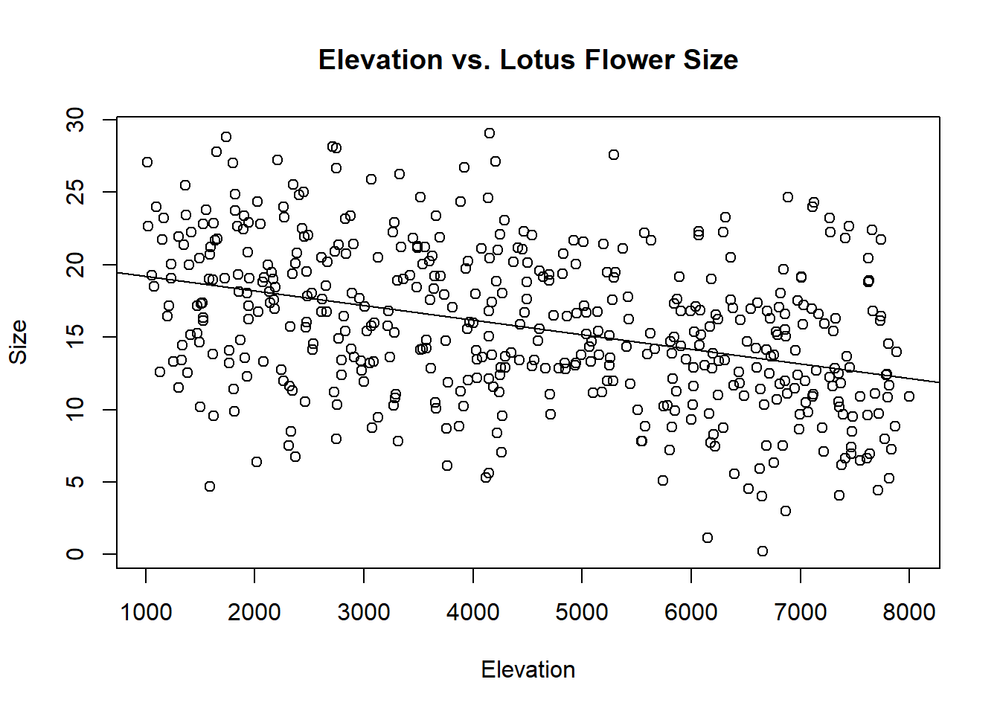
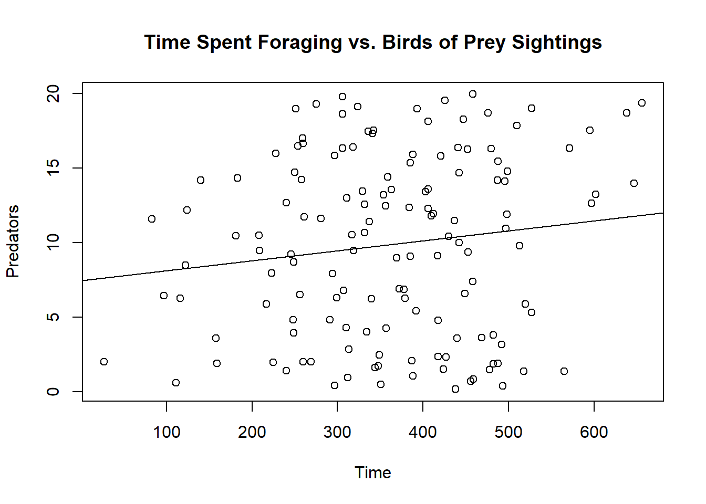

Rows: 40 Columns: 2
── Column specification ────────────────────────────────────────────────────────
Delimiter: ","
dbl (2): PreySpiders, WolfSpiders
ℹ Use `spec()` to retrieve the full column specification for this data.
ℹ Specify the column types or set `show_col_types = FALSE` to quiet this message.
Rows: 473 Columns: 2
── Column specification ────────────────────────────────────────────────────────
Delimiter: ","
dbl (2): Elevation, Size
ℹ Use `spec()` to retrieve the full column specification for this data.
ℹ Specify the column types or set `show_col_types = FALSE` to quiet this message.
Rows: 140 Columns: 2
── Column specification ────────────────────────────────────────────────────────
Delimiter: ","
dbl (2): Time, Predators
ℹ Use `spec()` to retrieve the full column specification for this data.
ℹ Specify the column types or set `show_col_types = FALSE` to quiet this message.
View(Dataset_3)
1. Wolf Spiders vs. Prey Spiders
plot(WolfSpiders~PreySpiders, data = Dataset_1)title(main ="Wolf vs Prey Spiders")results =lm(WolfSpiders~PreySpiders, data = Dataset_1)abline(results)
results =lm(WolfSpiders~PreySpiders, data = Dataset_1)summary(results)
Call:
lm(formula = WolfSpiders ~ PreySpiders, data = Dataset_1)
Residuals:
Min 1Q Median 3Q Max
-0.53943 -0.25612 -0.07481 0.16258 0.83983
Coefficients:
Estimate Std. Error t value Pr(>|t|)
(Intercept) 0.1697 0.1100 1.543 0.131
PreySpiders 2.0527 0.3801 5.401 3.77e-06 ***
---
Signif. codes: 0 '***' 0.001 '**' 0.01 '*' 0.05 '.' 0.1 ' ' 1
Residual standard error: 0.3382 on 38 degrees of freedom
Multiple R-squared: 0.4343, Adjusted R-squared: 0.4194
F-statistic: 29.17 on 1 and 38 DF, p-value: 3.77e-06
Conclusion
For each 1 spider/m2 increase in prey spiders, we observed a 2.05 spider/m2 increase in wolf spiders (p = 3.77x10^-6; r^2 = 0.419).
2. Relationship Between Elevation and Size of Lotus Flowers
plot(Size~Elevation, data = Dataset_2)title(main ="Elevation vs. Lotus Flower Size")results =lm(Size~Elevation, data = Dataset_2)abline(results)

results =lm(Size~Elevation, data = Dataset_2)summary(results)
Call:
lm(formula = Size ~ Elevation, data = Dataset_2)
Residuals:
Min 1Q Median 3Q Max
-13.9214 -3.2643 -0.1018 3.4679 13.0356
Coefficients:
Estimate Std. Error t value Pr(>|t|)
(Intercept) 20.2230974 0.5498209 36.781 <2e-16 ***
Elevation -0.0010102 0.0001118 -9.034 <2e-16 ***
---
Signif. codes: 0 '***' 0.001 '**' 0.01 '*' 0.05 '.' 0.1 ' ' 1
Residual standard error: 4.927 on 471 degrees of freedom
Multiple R-squared: 0.1477, Adjusted R-squared: 0.1459
F-statistic: 81.62 on 1 and 471 DF, p-value: < 2.2e-16
Conclusion
For each 1000 meter increase in elevation, we observed a 1.01cm decrease in lotus flower size (p = 2 x 10^-16; r^2 = 0.1459).
3. Relationship between Foraging Time and Bird of Prey Presence in Colombian Ground Squirrels
plot(Predators~Time, data = Dataset_3)title(main ="Time Spent Foraging vs. Birds of Prey Sightings")results =lm(Predators~Time, data = Dataset_3)abline(results)

results =lm(Predators~Time, data = Dataset_3)summary(results)
Call:
lm(formula = Predators ~ Time, data = Dataset_3)
Residuals:
Min 1Q Median 3Q Max
-10.3518 -5.4773 0.8097 5.1510 10.3147
Coefficients:
Estimate Std. Error t value Pr(>|t|)
(Intercept) 7.437309 1.577591 4.714 5.86e-06 ***
Time 0.006690 0.004115 1.626 0.106
---
Signif. codes: 0 '***' 0.001 '**' 0.01 '*' 0.05 '.' 0.1 ' ' 1
Residual standard error: 5.985 on 138 degrees of freedom
Multiple R-squared: 0.01879, Adjusted R-squared: 0.01168
F-statistic: 2.643 on 1 and 138 DF, p-value: 0.1063
Conclusion
For each 1 birds of prey increase measured the preceding day, we observed a 2.81 minute/day increase in time spent foraging by Colombian Squires (p = 0.106; r^2 = 0.0117).